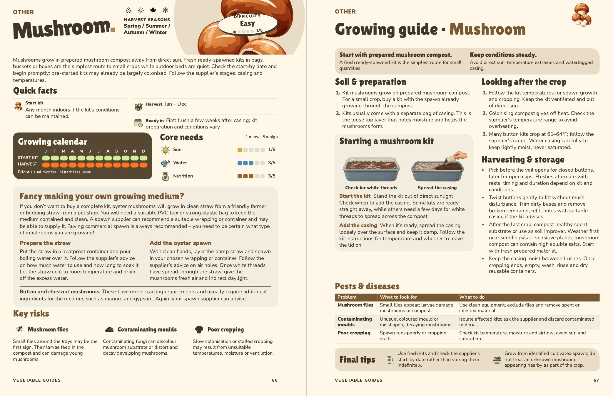

Mushroom
Pages 66–67. “Fancy making your own growing medium?” shows how to grow oyster mushrooms on straw with bought spawn. The introduction covers mushroom kits generally. “Starting a mushroom kit” now illustrates checking for white threads in a lidded plastic kit and spreading the casing. The leading problem in both lists is now named Mushroom flies.

Approved by John, 6 November 2026. Approval record. Sources and checks.